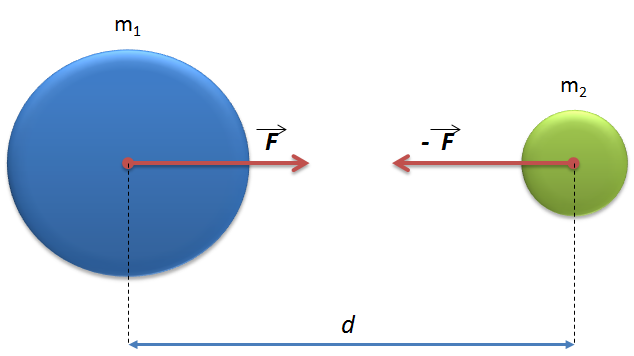
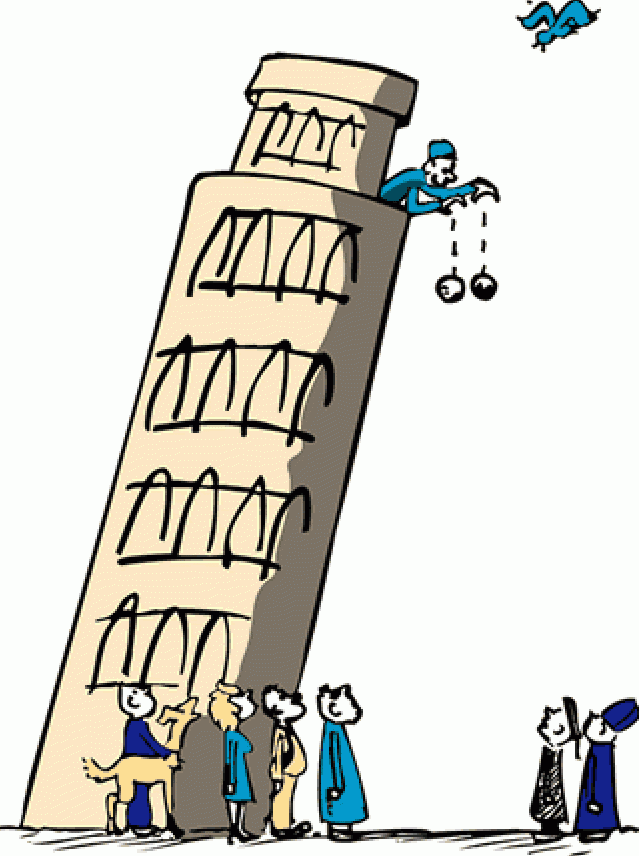
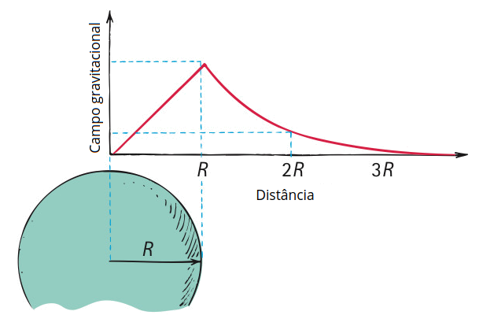
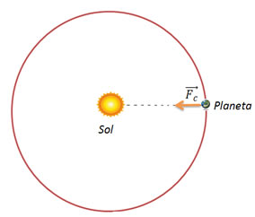
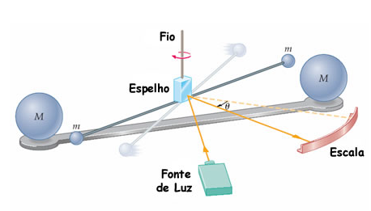

Aula3-28: Lei da gravitação universal
|
Enunciado: Dois corpos atraem-se por forças cujo módulo é diretamente proporcional ao produto de suas massas e inversamente proporcional ao quadrado da distância entre eles. Essa força, denominada gravitacional, age, no caso de corpos puntiformes, na direção da reta que une seus centros. Em que G = 6,67 × 10⁻¹¹ N·m²/kg² é a constante da gravitação universal. |
 |
Princípio da superposição
Quando há dois corpos massivos, redondos e de constituição homogênea, a força entre eles atua na direção da linha que une seus centros (veja a primeira imagem acima). Quando há mais de dois corpos envolvidos no problema, devemos calcular a força resultante levando em conta o princípio da superposição: a força resultante sobre o corpo analisado é a soma vetorial das forças exercidas por cada um dos demais corpos do sistema.
Massa x aceleração
|
Um fato que contraria nossa intuição é que, independentemente da massa, um corpo sempre cai em direção à Terra (ou a qualquer outro corpo massivo capaz de atraí-lo) com a mesma aceleração. Isso significa que, se abandonarmos dois objetos lado a lado, de uma mesma altura — com massas iguais ou radicalmente diferentes — e desprezando a resistência do ar, eles chegarão ao solo no mesmo intervalo de tempo. O que explica esse fenômeno é a equivalência entre a massa gravitacional e a massa inercial. Veja a relação: |
 |
Gráfico força gravitacional X distância

É possível demonstrar, com matemática de nível avançado, que a força gravitacional no interior do planeta Terra cresce linearmente com a distância ao seu centro de massa; externamente ao planeta, como evidencia a lei da gravitação universal, a força cai com o quadrado da distância. Observe a representação:
Demonstração da terceira lei de Kepler
Lembremo-nos, antes, da terceira lei de Kepler (lei dos períodos): a razão entre o quadrado do período orbital de um planeta e o cubo do raio de sua órbita é constante (constante de Kepler):
|
Sabemos que a resultante centrípeta que mantém um corpo celeste em órbita ao redor de outro é a própria força gravitacional. Então: |
 |
Experimento de Cavendish
Em 1798, o físico inglês Henry Cavendish (★ 1731 — 1810 ✝) calculou, pela primeira vez, o valor aproximado da constante gravitacional G. Para cumprir tal façanha, usou uma balança de torção, conforme mostra a ilustração abaixo:

A balança era formada por uma haste delgada que conectava duas esferas maciças, sustentada por um fio do qual pendia um espelho que refletia um feixe de luz. Com esse equipamento, o cientista aproximou outras duas esferas maciças daquelas que estavam suspensas pelo fio. Como era esperado, o fio girou (devido à atração gravitacional entre as esferas) e, por conseguinte, a direção do feixe de luz refletido se alterou. Munido dos dados obtidos, Cavendish realizou os cálculos necessários e encontrou o valor da constante gravitacional G.